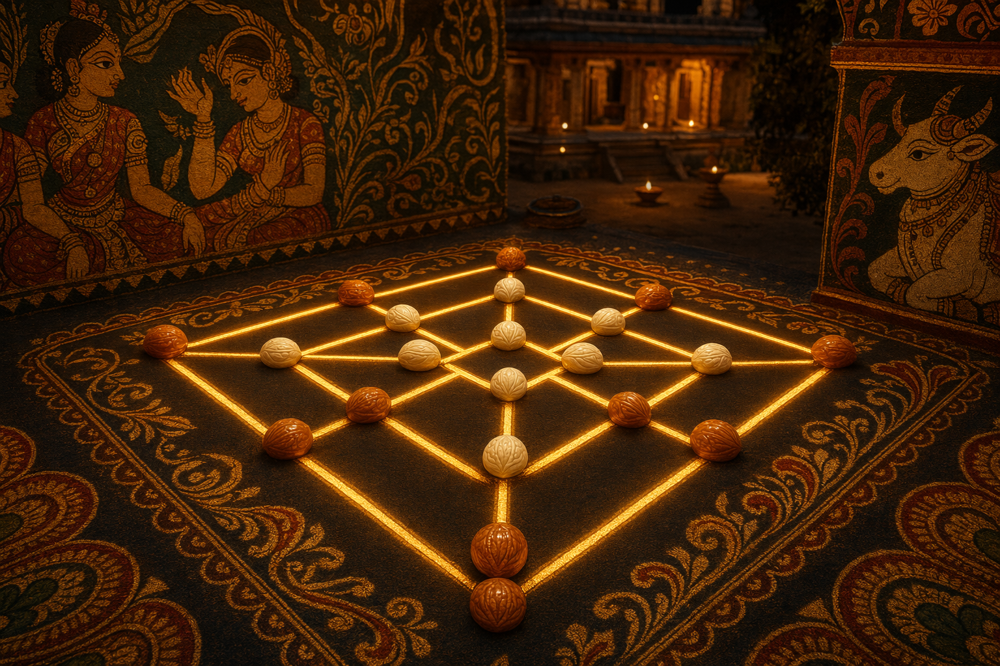

The ancient nine-pebble alignment game — Navakankari — reborn in glowing 3D. Three nested squares, nine seeds each; line up three and break one. No dice. Only foresight.
No randomiser — place, move, and once down to three, fly. Mills form only on connected straight lines; never a diagonal false-mill.
The village Saalu Mane, a merchant Angadi, and the cosmic Navagraha — each re-reads alignment as foresight, market power, or cosmic order.
Bloom-lit carved stones, mobile-first touch, and a minimax AI that sees several moves ahead.
Part of Traditional Board Games · reconstructed with original intent · built with GitHub Copilot CLI